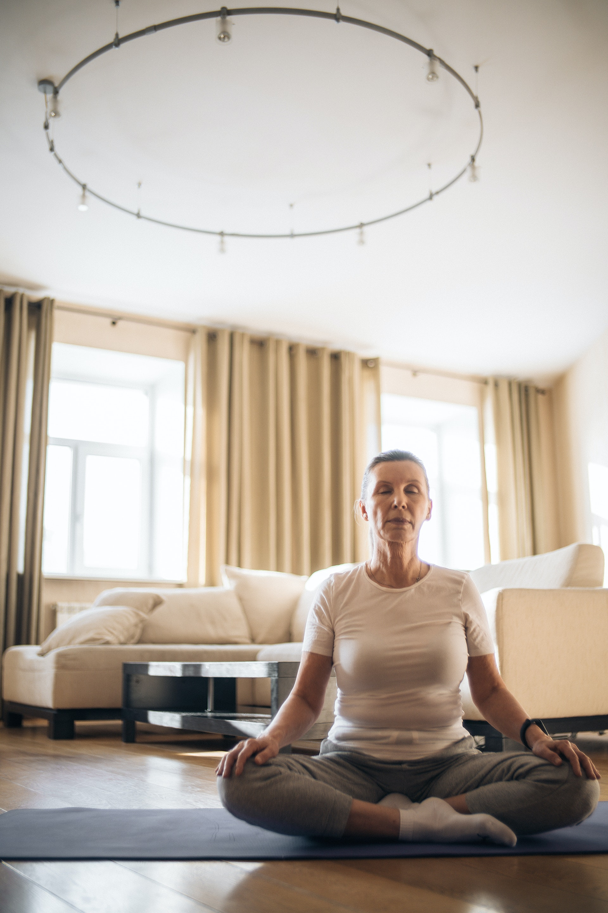

Yoga comprises all the essential elements of life such as knowledge, emotions, and action.
It has the power to cure all lifestyle-based diseases. If one practices anulom vilom pranayam for 15 minutes,
it will cure high blood pressure while kapalbhati pranayam has the power to cure thyroid.
A 30-minute practice of kapalbhati will cure hepatitis and colitis diseases. Similarly,
if one does anulom vilom and kapalbhati pranayam for 30 minutes each, it will cure chronic diseases.
TYPES OF PRANAYAM :
1. Anulom-Vulom Pranayama

This pranayama is all about deep breathing and has no sound as such.
For this exercise sit in a comfortable position,
close your right nostril with your thumb and slowly exhale from the left nostril. After exhaling slowly and steadily inhale through the same nostril.
Do the same process with your left nostril with your ring finger and exhale through the right nostril. Repeat this process for 2-5 minutes.
2. Kapalbhati Pranayama

This pranayama is all about forceful and active inhalation and exhalation. you have to inhale normally and exhale forcefully. During exhalation the stomach muscles
should be moved fiercely (pulling it closer to your back).Do this breathing exercise for 2-5 minutes.
3. Ujjayi Pranayama

Start this breathing exercise with normal inhalation and exhale completely. Bow your head down blocking the free flow of air and
inhale as long as you can. Hold back for 2-5 seconds. While exhaling, close your right nostril with your right thumb and breathe out through your left nostril.
You can repeat this exercise for ten to twelve times.
4. Bhastrika Pranayama

This breathing exercise starts with deep breath-in where we expand our stomach. The air is completely breathed out
with strength, sucking your stomach towards the backbone. During inhalation, your stomach should be extended to the maximum.
Do this exercise for 1-2 minutes and do take rest.
5. Bhramari Pranayama
In this pranayama the breathing sounds like a humming bee. To do this,
sit in a relaxed posture and close your ears with your thumbs place your index fingers on the temple and close your eyes with the other three fingers.
Slowly inhale through your nose and hold it for a few seconds. Keeping your mouth closed, slowly exhale by making a humming sound. Repeat it 5 times.
Initially one should start with eleven cycles of breathing, and it should be increased to one hundred and twenty one without any fear. However, later the breathing should be made a part of daily practice of other Asanas, and be practiced for two to three minutes.
All these types can also be practiced with slow inhalation and exhalation. Here it is important to note that practicing these types of breathing does not mean doing Pranayama. This is simply a preparation of the actual practice of Pranayama.